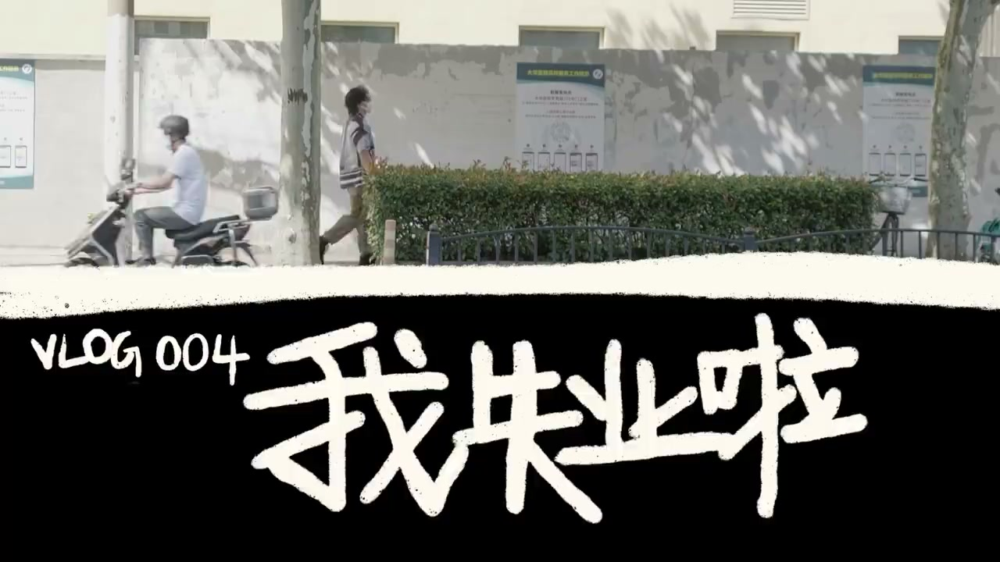
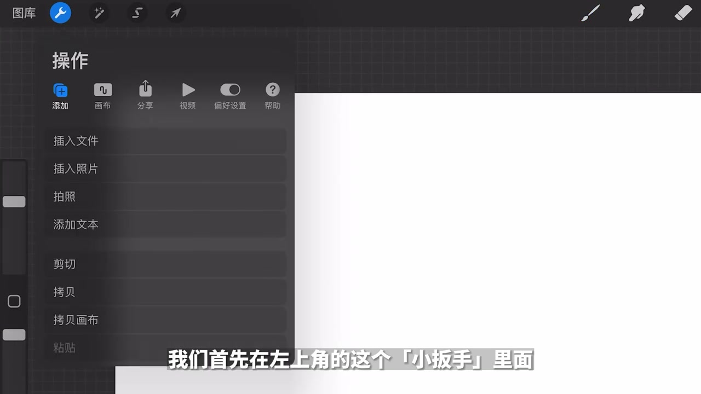
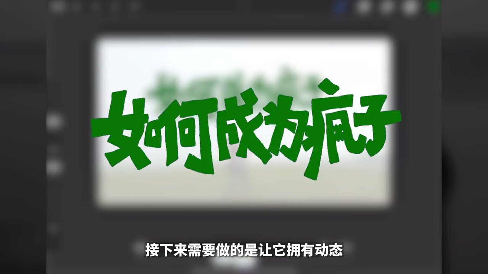
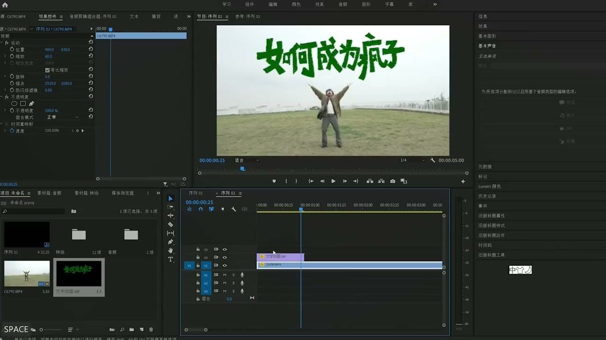
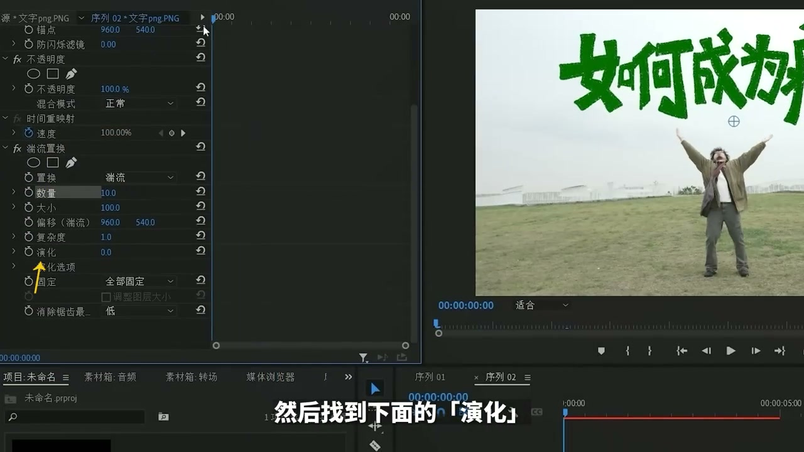
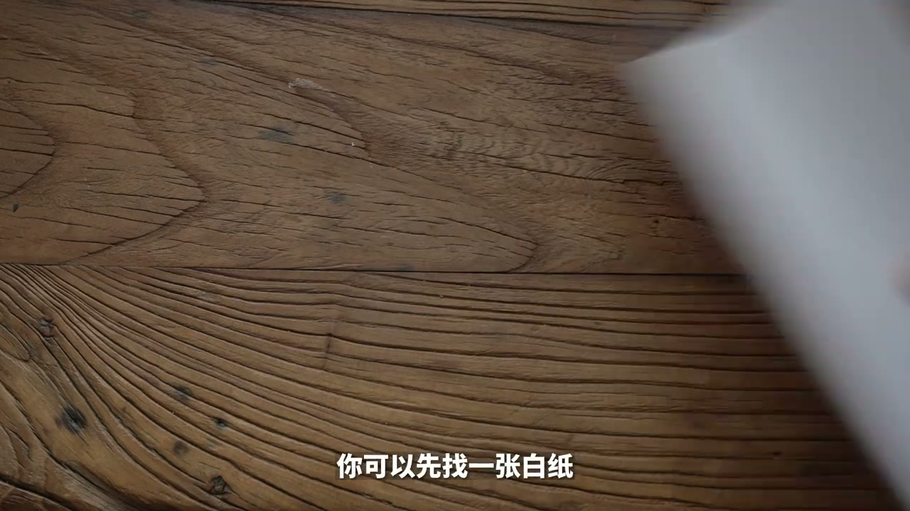

01
中文
让我们省略多余的开场白，直接进入详细教程。
EN
Let's skip the intro and dive right into the tutorial.
表达提示skip the intro（省略开场白）

Scene English · Vlog · 手写文字动画
Vlogs and Hand-Drawn Animated Text Are a Perfect Match! Step by Step
🎧 语音讲解
Opening: how do you make hand-drawn animat…
情境iPad+Procreate 是第一种方法。
让我们省略多余的开场白，直接进入详细教程。
Let's skip the intro and dive right into the tutorial.
表达提示skip the intro（省略开场白）
你需要一台可以使用Apple Pencil的iPad，以及一个付费软件Procreate。
You need an Apple Pencil-capable iPad and the paid app Procreate.
表达提示Apple Pencil + Procreate
skip the intro（省略开场白
Apple Pencil + Procreate

Writing in Procreate: open Procreate and c…
情境动画协助+图层描字+方块空心字。
画布的尺寸可以设置成跟你视频一样的，比如1080P就设置成1920x1080。
Match the canvas size to your video—for 1080p, use 1920x1080.
表达提示match the size（同尺寸）
在组合里找到小扳手，找到画布，把这个动画协助打开。
Find the wrench icon, open Canvas, and turn on Animation Assist.
表达提示animation assist（动画协助）
顺着笔画描成方块感觉的空心字，最后再填色。
Trace into blocky hollow letters along the strokes, then fill them.
表达提示blocky hollow letters（方块空心字）
match the size（同尺寸
animation assist（动画协助

Exporting the animation: next, make it mov…
情境三个图层复制成九帧导出透明GIF。
新建两个图层，每个图层各把刚刚写的字描一遍，获得三个笔迹略有不同的图层。
Create two more layers, each tracing the words, for three slightly different versions.
表达提示three versions（三份笔迹）
可以故意粗糙一点，这样最终生成的动画抖抖感会更强一些。
Trace rougher on purpose for a stronger shaking feel.
表达提示rougher shake（粗糙抖抖感）
直接选这个动画GIF，这样导出来的素材就是透明底的。
Pick animated GIF—the export has a transparent background.
表达提示transparent GIF（透明底GIF）
three versions（三份笔迹
rougher shake（粗糙抖抖感

PR turbulence-displacement method: if trac…
情境湍流置换+色调分离时间实现逐帧抖动。
把字导出为一张PNG的图片，然后把这张图放到你的视频上面。
Export the word as a PNG and lay it over your video.
表达提示single PNG（单张PNG）
把数量改成10，在演化开头打一个关键帧，最后把演化的数值猛拉大。
Set Amount to 10, keyframe Evolution at the start, then crank it up.
表达提示turbulent displace（湍流置换）
把这个24改成6或者9，这样整个嵌套就变成6帧或者9帧了。
Change 24 to 6 or 9, and the nest becomes 6 or 9 frames.
表达提示posterize time（色调分离时间）
把
turbulent displace（湍流置换

No-iPad paper method: without an iPad ther…
情境纸笔描三遍拍照成动画。
用马克笔写出你要放在视频的文字，注意笔触要粗一点。
Write with a marker, making the strokes thick.
表达提示thick strokes（粗笔触）
把写好的字贴在窗户上，再盖上另一张白纸，把字描一遍。
Stick the paper on a window, cover with another sheet, and trace the words.
表达提示trace on glass（贴窗描字）
把这三张照片导进剪辑软件里，一般是每张三帧左右，多复制几组首尾相连。
Import the three photos, about three frames each, and chain duplicates end to end.
表达提示three frames each（每张三帧）
thick strokes（粗笔触
trace on glass（贴窗描字

Screen-mix and recoloring: nest the image,…
情境变暗=透明黑字，变亮=镂空，PS抠字改色。
选择变暗，它就会变成透明底的黑色文字动画。
Choose Darken for transparent-background black text.
表达提示darken blend（变暗混合）
如果混合模式选择变亮的话，就会变成这种镂空的效果。
Choose Lighten instead for a hollow cutout effect.
表达提示lighten hollow（变亮镂空）
把写好的照片先导进PS里把字抠出来，然后就可以用PR里的颜色工具给它改颜色了。
Cut the letters out in Photoshop, then recolor them with Premiere's color tools.
表达提示recolor the text（改文字颜色）
darken blend（变暗混合
lighten hollow（变亮镂空
说设备要求
说画布设置
说描字技巧
说动画导出
说PR抖动
逐帧画太累，描三遍更高效。
描得太整齐抖动感弱。
导出动画GIF才有透明底。
要选色调分离时间而非色调分离。
多种方法可自由组合。